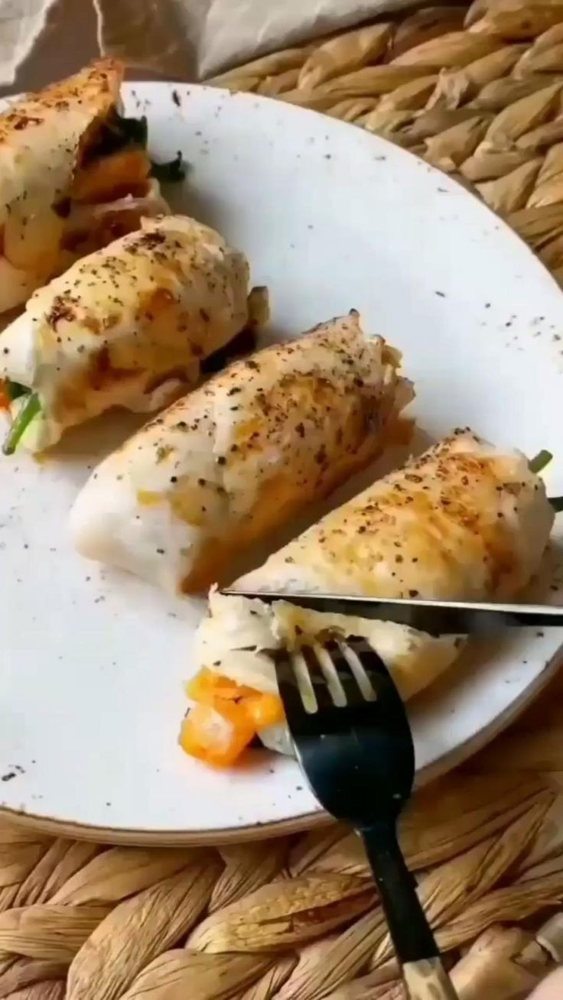

Aves · Frango
Enroladinhos Meireles

Ingredientes
- 4 peitos de frango sem osso cortados ao meio
- Sal a gosto
- 1 cenoura raspada e passada no ralador grosso
- ⅓ xícara de uvas-passas pretas sem sementes
- 1 maçã verde com casca passada no ralador grosso
- 2 colheres (sopa) de vinagre de vinho branco ou de maçã
- 4 colheres (sopa) de manteiga ou margarina
- 1 garrafinha de leite de coco
- 1 colher (chá) de gengibre ralado
Modo de preparo
- Com o auxílio de uma faca afiada, abra cada metade de peito de frango, formando uma espécie de bife largo. Tempere cada pedaço aberto de peito de frango com sal a gosto.
- Numa tigela, coloque a cenoura, as passas, a maçã ralada, o vinagre e sal a gosto, e misture bem.
- Divida essa mistura em oito partes e coloque sobre cada metade aberta de peito de frango. Enrole e prenda com um palito de madeira ou amarre com um pedaço de barbante.
- Preaqueça o forno em temperatura média (180 °C).
- Coloque os peitos de frango enrolados, um ao lado do outro, numa fôrma refratária.
- Numa panela pequena, coloque a manteiga, o leite de coco e o gengibre e leve ao fogo brando, mexendo sempre até a manteiga derreter.
- Retire do fogo e derrame sobre os peitos de frango que estão na fôrma. Leve ao forno preaquecido para assar por cerca de 40 minutos ou até a carne ficar dourada e macia. Deixe esfriar e congele.
Observação
Cuidado com os palitos ao embrulhar os enroladinhos: proteja as pontas com papel-alumínio para não furarem a embalagem. Congelamento: coloque os rolinhos numa travessa forrada com plástico, cubra com filme plástico e leve ao freezer; passe para um saco plástico, retire o ar, vede bem, etiquete e congele. Descongelamento: na geladeira de um dia para o outro; passe para uma travessa refratária e leve ao forno em temperatura baixa para aquecer.